5th Wild/Feral Food Week!
Wild/Feral Food Week, 24—31 May, 2019, promotes “harvesting the whole farm” and re-incorporating pandigenous ancestral foods to reduce food waste, promote biodiversity, and delight palates across the globe.
Please visit these participating restaurants, bars, distilleries, breweries, farms, & foragers!

Morchella Wild Foods (San Francisco Bay Area, USA)
This San Francisco foraging company supplies over 200 species of plants and fungi, largely to fine dining establishments. Founder Bryan Jessop also offers wild food surveys of farms and other private lands. Bryan will lead a foraging walk in the Bay Area, time and date TBA.
Chez Panisse (Berkeley, California, USA)
On May 28, Chef Cedric Tolosa will highlight wild and feral foods including wild greens from Bob Cannard’s Green String Farm, wild fish, and foraged wild and feral foods such as pineapple weed, vetch, and mediterranean mustard. The menu will be available Saturday, 25 May.
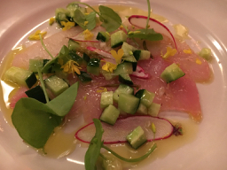
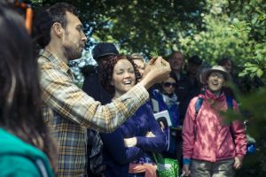
Go Foraging (Bristol, England, UK)
Join us on 25 May, 10:15 – 13:30 BST, for a morning of foraging with Martin Bailey at The Community Farm. During the walk we’ll explore the springtime hedgerows and wilder areas of The Farm. You’ll forage your own tasty leaves, learning what’s in season and good to eat right now. At the end of our walk we’ll enjoy wild herb tea, delicious foraged ferments, sourdough bread, and wild pickles. It doesn’t matter whether you are an experienced forager or a complete novice, you’re sure to find this an enjoyable and interesting day.
Information and tickets here.
Four Season Foraging (Minneapolis, MN, USA)
Springtime Foraging Saturday, May 25th, 12pm to 2pm.
They say that April showers bring May flowers… What they don’t tell you is how many of those flowers are tasty wild edibles! Join Maria Wesserle and Four Season Foraging as we explore the Midtown Greenway and learn what wild edibles and medicinals spring has to offer. Plants we will probably encounter include garlic mustard, burdock, dandelion, plantain, and many others! We will discuss identification, harvest, and preparation of each plant. Meet at the Midtown Greenway and Humboldt Ave S. Mpls, MN 55408. (See map here: https://goo.gl/maps/2zvtyBGRh142) There will be a sign that reads “Four Season Foraging.” Sliding scale $15-$35. This event is wheelchair accessible. For more details, please email info@fourseasonforaging.com or call 612-440-5958.
(Space is limited. Please register here before Thursday, May 23rd, 12pm.)
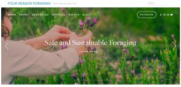
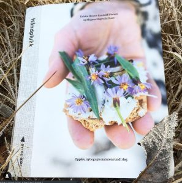
Haandplukk // Foraging With Ludokriss (Oslo, Norway)
Forager and author Kristin Nielsen will host a foraging walk in the woods/nearby cultivated fields, collecting food for a group meal afterwards. Contact foragingwithludokriss@gmail.com or Facebook event or +4798659336
Native Bar (Singapore)
Native Bar often includes foraged ingredients in their craft cocktails, working with partners and communities to unearth ingredients and uncover the stories behind these ingredients. For W/FFW, they have a new drink on the menu, the Concrete Jungle, which includes foraged nutmeg leaves, mead made with wild flowers.
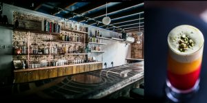
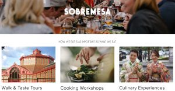
Sobremesa Culinary Tours (Barcelona, Spain / Kyoto, Japan)
Sobremesa has some spots left for our A Taste of Japan Tour, May 19-27, based in Kyoto, Kanazawa and the mountains north of Kyoto. We will guide you through a food-based look into this traditional culture we are fascinated by, including cooking classes with traditional foods, traditional meals, a miso making workshop with local artisans in the mountains, a pickle making workshop in a 150 year-old family run pickle producing facility, 2 tea ceremonies, and many delicious meals. More info and sign up here.
Life by Lisen (Stockholm, Sweden)
Metamorfos. Förvandling. Förändring. Omdaning.
THIS WORKSHOP WILL BE HELD IN SWEDISH Vi är natur. Vi ingår i samma system, lever under samma villkor och följer samma cykler. Den här dagen får du djupdyka i dig själv som natur – existentiellt och konkret och hitta nya vägar att omfamna livets förändring. Under en vårdag kombinerar vi existentiellt utforskande med skogsvandringar och direktkontakt med naturen.
SÅ HÄR GÅR DET TILL Först närmar vi oss det existentiella. Vad är det att vara en del av naturen, att leva i metamorfos, att vara i ständig förändring. Sedan går vi ut i skogen runt knuten. Möter naturens pånyttfödelse. Och där i en glänta får du lära dig mer om vilda växter, och hur de kan bli en del av din matkultur. På vägen hem plockar vi det vi behöver för att laga en vild vegetarisk måltid tillsammans. Efter maten får du en stund för dig själv – vandra, skriv, fundera. Sedan samlas vi, fikar och reflekterar kring hur metamorfos kan vara en del av vår livsförståelse.
KURSLEDARE Ann Lagerström, existentiell samtalsledare och författare bidrar med existentiell filosofi och psykologi. Lisen Sundgren, kostrådgivare och en av våra främsta kännare av örter och vilda växter, introducerar er till naturen som källa till hälsa och njutning. Saturday May 25 Time: 9 am – 5 pm Price: 2000 kr ink. moms, all meals included Contact med for registration: Lisen Sundgren, lisen@lifebylisen.com
WILD WALK AT ROSENDALS GARDEN MAY 28 Välkommen ut i det gröna! Smaka på den frodiga grönskan som bjuder på svinmålla, älggräs, röllika, björklöv och andra delikatesser. Tisdag 28 maj kl. 17.00 – 18.30
Ogräs är framtidens mat! Vilda växter förtjänar en högre status. Låt maskrosor, kirskål och svinmålla frodas istället , och ät upp dem. Vilda ätliga växter är inte bara kokheta inom den moderna gastronomin, men också bland det mest näringsrika och miljövänliga du kan äta. Och ett fantastiskt sätt att knyta an till naturen.
För att plocka och använda vilda växter krävs kunskap om hur och var man får plocka, hur man identifierar vad som är ätligt och hur växterna tillagas. Under vandringen får du tips om hur vanliga vilda växter tillagas till mat, samt hudvårdsprodukter och hur de kan förbättra din hälsa. Lisen Sundgren är herbalist, forager, författare och en ivrig förespråkare för ett liv i samklang med naturen. Hon samarbetar med flera framstående kockar och varit med och utvecklat köket på flera krogar.
Hennes två senaste böcker, Det Vilda Köket och Vildvuxet finns att köpa på plats. Obs! klädsel efter väder då vi är ute Deltagaravgift: 350 kr Register here: https://dinkurs.se/appliance/?event_id=59088
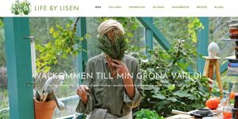
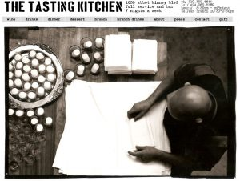
The Tasting Kitchen (Venice, CA, USA)
For Wild/Feral Food Week, we will offer several menu options featuring wild/natural/feral foods as well as the option to participate in a family style tasting menu comprised wholly of dishes featuring said menu items. For reservations, see @the.tasting.kitchen, the.tasting.kitchen.com or OpenTable Prices range from $75-$115 for the tasting menu, with individual dishes $15-$45.
Lineage (Wailea, Hawaii, USA)
Lineage focuses on celebrating food culture in Hawaii, by honoring the traditions, recipes, and techniques of our elders. For W/FFW, Lineage will have a wild/feral menu item. Book through lineagemaui.com or OpenTable. Items are priced $6-$10.
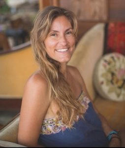
Savage Kitchen (Wailuku, Hawaii, USA)
Forager, wild food advocate, invasivore, and chef Sunny Savage will lead two foraging walks: - May 25th in PoliPoli from 10-2 for a $20 suggested donation, includes wild snack. - May 31st in Paia from 4-6pm for a $10 suggested donation.
For event updates and details, follow @sunnysavage on Instagram or see Facebook
The Botanist Gin (Islay, Scotland)
The Botanist produces the only gin from Islay, Scotland, at the Bruichladdich Distillery. The Botanist incorporates 22 wild, hand-foraged botanicals.
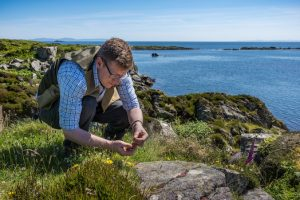

Restaurante Manu (Curitiba, Brazil)
Manoella ‘Manu’ Buffara of Restaurante Manu has swiftly become one of Latin America’s hottest young chefs by celebrating the diverse natural produce of the Paraná region in beautifully presented, contemporary dishes.
SingleThread Farms Restaurant and Inn (Healdsburg, California, USA)
SingleThread Farms regularly uses foraged items, ranging from mushrooms to seaweed and everything in between, throughout their restaurant and Inn–from menu items to flowers and their non-alcoholic pairing menu. They also use wild weeds and herbs to make herbal wellness products for inn guests. They also feature preserved specimens in decorative displays and installations seasonally. Anything inspiring throughout the season has a moment and is celebrated.
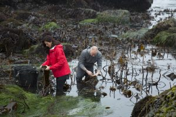
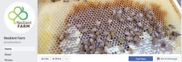
Resilient Farm (Hvalsø, Denmark)
Agronomist and forager Teresa Fresu will lead a wild food identification walk in the Danish National Park Skjoldungerne Landet in Hvalsø on Thursday, 30 May, 12-3pm. More information here.
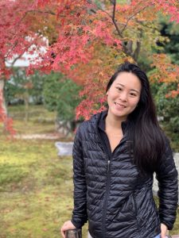
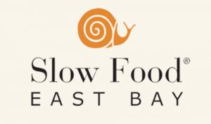
Slow Food East Bay (Oakland, California, USA)
Event TBA
Shiso Studio (Copenhagen, Denmark)
Shiso Studio is hosting a series of dinners pertaining to only really wild landscape in Denmark – the coast line. The concept of the dinners focuses on saltwater, and they have created a planting palette for the dinners based around coastal plants in Denmark. Why saltwater? – it is working on two levels. The first is a discussion on climate change and how saltwater will become more prevalent in the future, and the second reason is that the Danish coast is special part of Danish landscape and culinary history.
The dinners are held May 23rd – June 8th in Copenhagen in an old military bunker in Copenhagen that has been consumed by plants over time. The price for ticket is 515dkk (approx $85) For tickets and reservations, visit here
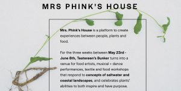
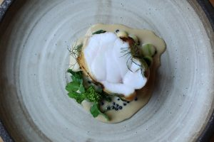
The Gannet (Glasgow, Scotland, UK)
The Gannet Restaurant works closely with two foragers, regularly showcasing seasonal wild edible plants, herbs, shore vegetables, and seaweeds in their ever-changing menus. For reservations, visit here
Leeds Indie Food / Edible Leeds / Seven Arts (Leeds, England, UK)
Walk on the Wild Side Wild Food: Walk, Talk, Make, Eat & Take: Professional forager Craig Worrall will lead a group from Seven Arts to Gledhow Valley Woods. Craig will point out and explain the uses of plenty of wild edibles and teach you how to identify a range of in-season, gourmet, and wild edible plants.
At around 13:00, you’ll return to Seven Arts to create your very own lacto-fermented wild garlic to take home, before sitting down to a bowl of delicious wild soup, bread, cakes and drinks. All food, drink and equipment are included in the ticket price of £44 GBP. For additional details and tickets, visit here
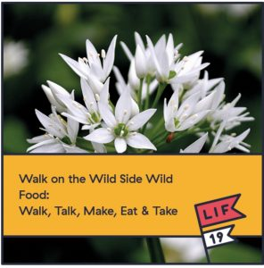
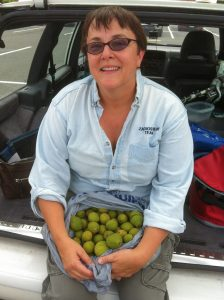
The Backyard Forager (Santa Fe, New Mexico, USA)
Forager, ethnobotanist, author, and wild-food educator Ellen Zachos is opening her online foraging classes to new registrants for Wild/Feral Food Week. Learn about wild edible foods, wild spices, wildcrafted cocktails, and more. To sign up, visit here
DTU Skylab FoodLab (Lyngby, Denmark)
DTU FoodLab will celebrate wild and feral food by hosting a cocktail and speaker event. This event will introduce students to the world of wild and feral foods through a series of presentations, tastings, and networking opportunities with experts in wild food. We will have presentations from businesses and researchers working with seaweed, insects, and other wild foods.
Speakers include: Dansk Tang, Lars Birck, Geoffrey Canilao, and Ditte Baun Hermund. There will also be students working with wild foods presenting their mission and product.
This is a free event with limited spots. Learn more about the event on Facebook: here Sign up via Eventbrite: here
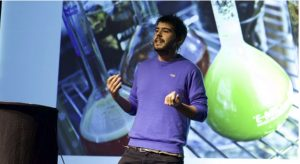
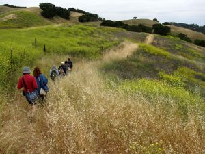
Feral Kevin (Walnut Creek, California, USA)
Author, urban farmer, and wild food instructor Kevin Feinstein will lead a wild food walk and edible plant tour. To register, see the link at feralkevin.com/classes or Eventbrite
Feral Kevin generously offers a 40% discount for Wild and Feral Food Week participants. (Discount code WILDFERAL) Follow Feral Kevin on Instagram.
Forage Fine Foods (Herefordshire, England, UK)
On 24th May, we are hosting our annual Wild Spring Feast –food gathered, reared & hunted from within 5 miles of our small kitchen in the ancient Black Mountains between England and Wales. Local ingredients inspired by the other lands our wild food grows in celebrating the smallness of the wild world.
The evening will include wild cocktails, canapes, and a 3 course meal, followed by music from the Nuadha Quartet.
£37.50 GBP. For reservations and tickets, please visit here
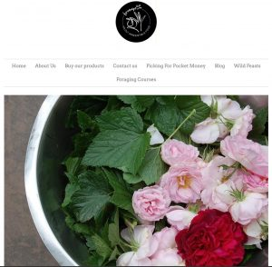
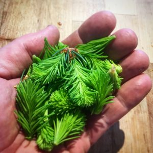
Orchard Kitchen (Whidbey Island, Washington, USA)
Chef and forager Karen Achabal will lead an Introduction to Foraging Wild Edible Plants at Orchard Kitchen, the hyperlocal farmhouse restaurant on Whidbey Island created in 2015 by Chef Vincent Nattress (a Whidbey Island native who started his culinary career in the SF Bay Area) and wine and service maven Tyla Jones Nattress.
This class will teach you how to identify, harvest, and cook with locally available wild edibles. Learn how to safely and sustainably enjoy the delicious feast of wild ingredients that grow all around us. Class includes: - 90 minutes of cooking instruction - family-style farmhouse lunch - 2 glasses of wine per person - coffee or tea service
Fee $130.44. To reserve a spot, visit here
Veld and Sea (Cape Town, South Africa)
Veld and Sea will be sharing images of wild edible plant and seaweeds, food photos and recipes throughout this week from our already booked up foraging events and adventures on Instagram. The Veld and Sea team will be participating, foraging, leading and feeding on the following wildly delicious adventures: - A screening at the shark tank in the Two Oceans Aquarium of a local surf culture film which incorporates coastal foraging followed by a Q and A session with the directors and forager - A Life Aquatic themed Foraging Cooking Class - A free dive forage and cook up - A wild flavour forage and feast
Many events are sold out already, but tickets for the film screening at the Aquarium on the 24th of May are available here.
Veld and Sea’s upcoming foraging workshops and nature-inspired events are listed at here
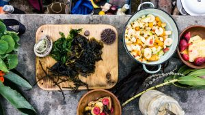
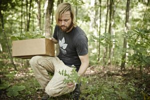
Scratch Brewing (Ava, Illinois, USA)
Scratch offers a range of beers on draft and in bottles year-round that contain plants harvested wild from the woods surrounding the brewery. During Wild and Feral Food Week, we will have over 15 offerings that include foraged ingredients such as morels, burdock, and sap from maple, birch and walnut, available during our normal hours of operation Monday through Sunday.
Scratch is a farmhouse brewery located on the edge of the Shawnee National Forest at 264 Thompson Rd, Ava, Illinois. Scratch Brewing has gained worldwide notoriety for its innovative use of locally sourced and wild harvested ingredients to make beer that has a sense of place.
Botanik (Shanghai, China)
Chef Elijah Holland’s new Shanghai restaurant, Botanik, features purely Chinese produce, either wild and foraged or farmed locally. Chef EJ is also involved in the wild and feral distillery Manly Spirits (Australia).
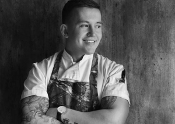
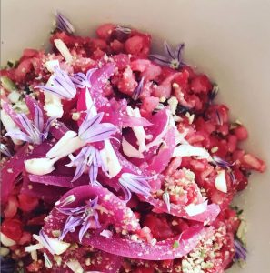
Patricia Nunes / First Hand Experiences (London, England, UK)
At First Hand Experiences, what matters to children is at the heart of everything we do. First Hand Experiences offers holiday clubs and sleep-away camps for children. For opening week, 25th to 31st May, they will celebrate Wild/Feral Food Week at their site, based in an organic farm, surrounded by green and edible wild plants. The event will include a forager and trained forest teacher, as well as cooking classes with chef Patricia Nunes to teach children how to prepare wild and feral foods. More information here.
Pinoy Heritage (San Francisco, California, USA)
On 25 May, Filipino Food pop-up Pinoy Heritage will offer Kamayan: feasting with the hands, a meal featuring foraged greens. Price $85, including a cocktail. Reservations here.
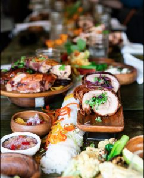
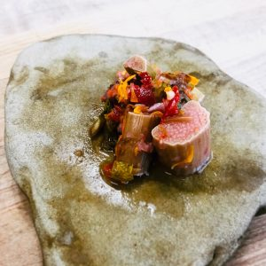
Volcano Kimchi (San Francisco, California, USA)
This week, Volcano Kimchi will offer a rhubarb kimchi with wild nasturtium flowers, among their other locally-sourced, organic, handcrafted foods. Volcano Kimshi is available at farmers’ markets and several grocery stores in the San Francisco area, including the Ferry Plaza Farmer’s Market, the Clement St. Farmers’ Market, and the San Rafael Civic Center Farmers’ Market.
Fishing and Foraging Wales (Pembrokeshire, Wales, UK)
A warm welcome awaits you here on the shoreline of Wales.
Angler/forager/chef Matt Powell will custom craft a wild/foraged meal for up to 6 diners at prices ranging from £250 to £650. He also offers excursions and training starting at £75. Sign up here.
A combination of saltwater lure angling for bass and other species, foraging, food and accommodation on the stunning Welsh coast. Fish – Fishing for the European saltwater bass on the magical Pembrokeshire coast with the first and only qualified saltwater angling guide with Natural Resources Wales and Wild Fishing Wales guiding qualification scheme. Forage – Learn to forage in a sustainable and responsible way along one of the most beautiful stretches of coastline in the world. Feast – Unique food inspired by my surroundings and the Welsh landscape, lovingly prepared and served by a chef with many years of experience gained in Michelin Star restaurants.
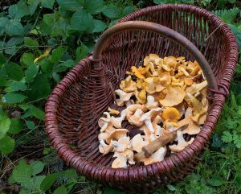